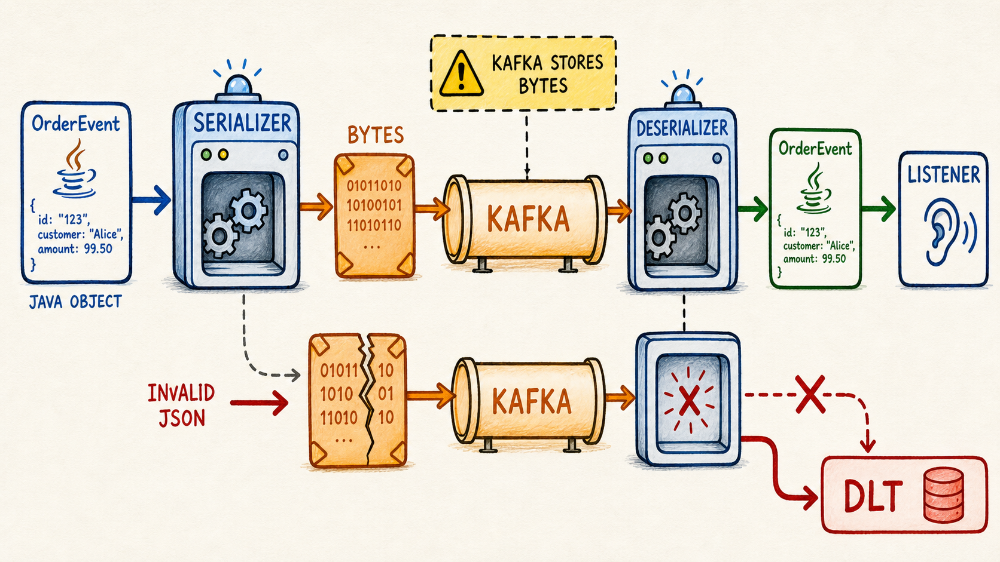

Wire format
Vẽ được đường đi object → serializer → bytes → deserializer.
Java object không tự đi qua Kafka. Producer serialize thành bytes; consumer deserialize theo một contract. Contract đổi thiếu kỷ luật sẽ tạo poison pill trước cả khi code trong listener được gọi.
Vẽ được đường đi object → serializer → bytes → deserializer.
Phân biệt field bắt buộc, tùy chọn, tên và kiểu dữ liệu.
Dự đoán thêm, đổi tên, xóa hoặc đổi type ảnh hưởng consumer nào.
Giải thích vì sao poison pill cần error handling trước listener.

Serializer<T> biến key/value thành byte[].
Broker lưu record bytes cùng metadata; không kiểm tra business field.
Deserializer<T> phải biết target type và contract tương thích.
Chỉnh payload rồi encode UTF-8. Đây là wire inspector cho JSON text; trong ứng dụng thật, JacksonJsonSerializer bắt đầu từ Java object.
Chọn preset hoặc tự sửa JSON.
Consumer mô phỏng yêu cầu ba string field: eventId, orderId, status. Bạn có thể chọn tolerant hoặc strict với unknown field.
| Thay đổi | Rủi ro | Hướng an toàn thường gặp |
|---|---|---|
| Thêm optional field | Strict old consumer có thể từ chối unknown field. | Kiểm thử consumer cũ; cấu hình tolerant có chủ đích. |
| Đổi tên/xóa required field | Consumer cũ thiếu dữ liệu bắt buộc. | Thêm field mới, dual-read/dual-write trong giai đoạn migration. |
| Đổi type | Deserializer hoặc validation fail. | Tạo field/version mới; tránh đổi nghĩa âm thầm. |
| Đổi Java package/class | Type header có thể làm service khác không resolve/trust. | Dùng type mapping token hoặc fixed target contract. |
Chọn case rồi chạy pipeline. Mô phỏng giả định đã cấu hình ErrorHandlingDeserializer và DLT recoverer.
Listener có được gọi không? DLT nhận object hay raw bytes?
Delegate deserializer fail; record-level listener không được gọi.
JSON parse được nhưng tạo record thất bại; vẫn là deserialize failure.
Object tạo thành công; exception phát sinh trong listener.
Dùng Map<String, Object> như tài liệu wire đã parse để luyện type check, required field và kết quả lỗi rõ nghĩa.
Project: senior-java-spring-mentor/practice-project
src/main/java/com/dream/learning/kafka/serialization. Tạo OrderStatus hoặc tái sử dụng enum hiện có nếu package dependency hợp lý.
public record OrderEvent(
String eventId,
String orderId,
OrderStatus status,
String currency) {
public OrderEvent {
// TODO: eventId/orderId không blank
// TODO: status không null
// TODO: currency mặc định "VND" nếu null/blank
}
}Tạo enum DecodeFailure { MISSING_FIELD, WRONG_TYPE, UNKNOWN_STATUS } và record kết quả chứa hoặc event hoặc failure—không chứa cả hai.
public record DecodeResult(
OrderEvent event,
DecodeFailure failure,
String detail) {
public DecodeResult {
// TODO: exactly one of event/failure is non-null
}
}public static DecodeResult decode(Map<String, Object> wire) {
// TODO: đọc required string eventId
// TODO: đọc required string orderId
// TODO: parse status an toàn
// TODO: currency optional, default VND
throw new UnsupportedOperationException("learner implementation");
}Baseline, thêm currency, thêm unknown field, rename orderId và status là số. In SUCCESS/FAILURE + reason.
Failure phải có category và detail đủ điều tra; caller quyết định skip, quarantine hay stop.
Lab dùng Spring Kafka hiện hành với JacksonJsonSerializer/JacksonJsonDeserializer. Ta chủ động tắt Java type header và đặt target type phía consumer.
orders.contract.v1 và topic mặc định orders.contract.v1-dlt, cùng số partition khi recoverer giữ nguyên partition.
spring:
kafka:
bootstrap-servers: localhost:9092,localhost:9094,localhost:9096
producer:
key-serializer: org.apache.kafka.common.serialization.StringSerializer
value-serializer: org.springframework.kafka.support.serializer.JacksonJsonSerializer
properties:
"[spring.json.add.type.headers]": false
consumer:
group-id: order-contract-lab
key-deserializer: org.apache.kafka.common.serialization.StringDeserializer
value-deserializer: org.springframework.kafka.support.serializer.ErrorHandlingDeserializer
properties:
"[spring.deserializer.value.delegate.class]": org.springframework.kafka.support.serializer.JacksonJsonDeserializer
"[spring.json.value.default.type]": com.dream.learning.kafka.contract.OrderEvent
"[spring.json.use.type.headers]": false
"[spring.json.trusted.packages]": com.dream.learning.kafka.contractLưu ý: package trong YAML phải khớp package thật của bạn.
kafkaTemplate.send(TOPIC, event.orderId(), event)
.whenComplete((result, error) -> {
// TODO: log eventId + partition + offset hoặc root cause
});@KafkaListener(topics = "orders.contract.v1")
void consume(ConsumerRecord<String, OrderEvent> record) {
// TODO: log key, partition, offset, eventId
// TODO: gọi business service
}Gửi ba event hợp lệ. Bằng chứng: producer metadata success, listener nhận đúng field, offset tăng.
Thêm optional currency; chạy consumer cũ và mới. Ghi rõ ObjectMapper policy—Spring enhanced mapper mặc định bỏ qua unknown properties, nhưng đừng dựa vào điều đó mà thiếu compatibility test.
Quan sát malformed JSON không đi vào listener. Error handler nhận failed record cùng exception header/raw bytes.
Với deserialize failure, recoverer khôi phục payload gốc dạng byte[]. Cấu hình đường publish DLT bằng ByteArraySerializer hoặc DelegatingByTypeSerializer cho cả object bình thường và raw bytes.
// TODO advanced:
// byte[].class -> ByteArraySerializer
// Object.class -> JacksonJsonSerializer
// DeadLetterPublishingRecoverer + DefaultErrorHandlerDùng FixedBackOff có giới hạn và phân loại exception. Deserialization failure không tự sửa khi đọc lại cùng bytes.
Xác nhận baseline trước. Lưu group lag và offset hiện tại.
kafka-console-producer --bootstrap-server localhost:9092 \
--topic orders.contract.v1 \
--property parse.key=true --property key.separator=:
order-42:{"eventId":"bad-1","orderId":Listener business không được gọi cho record lỗi deserialize. Log phải cho biết topic, partition, offset và exception—không dump dữ liệu nhạy cảm.
Xác nhận original topic/partition/offset, exception headers và raw payload có thể điều tra. DLT topic phải tồn tại và có partition phù hợp.
Consumer phải tiếp tục sau recovery; nếu đứng mãi ở một offset, error handling chưa đúng.
Gửi JSON hợp lệ nhưng amount âm. So sánh stack trace và stage fail với malformed JSON.
Ai sửa dữ liệu? Replay vào topic nào? Làm sao tránh duplicate side effect? Khi nào được xóa DLT record?
topic, partition, offset, timestamp, key.
error class, message, contract/version, service build.
DLT publish result và offset tiếp theo đã xử lý.
@KafkaListener?orderId thành id có gì nguy hiểm?orderId. Cần giai đoạn migration như dual field/dual read thay vì đổi ngay.byte[]?Vẽ bằng lời hai nhánh: event hợp lệ đến listener; malformed JSON fail trước listener và sang DLT. Nêu evidence cần giữ.
key.serializer và value.serializer.key.deserializer và value.deserializer.spring.kafka.*.JacksonJsonSerializer/JacksonJsonDeserializer. Khi project dùng version khác, kiểm tra đúng reference của version đó.